CAPA
![Imagem: Capa. Ao centro, logotipo da LEGO, composto por um quadrado vermelho com a palavra LEGO ao centro, escrita em letras brancas com contorno preto e amarelo. À direita, está escrito Braille Bricks em preto, com as letras R e a segunda letra héli representadas por pontos braile. Em seguida, está escrito Lego Braille Bricks em pontos braille. Abaixo, o título: MANUAL DE USO. Logotipo da Fundação Dorina Nowill para Cegos, composto por um emoji amarelo, com um largo sorriso, e óculos pretos e redondos; seguido pelo nome. Ao redor há peças coloridas de lego com letras na parte inferior e um emoji amarelo, com um largo sorriso, e óculos pretos e redondos formado por peças de lego. Na parte superior direita, um QR Code. Na parte inferior, logotipo do Instituto João e Belinha Ometto, composto por um círculo com a silhueta de uma mão grande, aberta e espalmada com uma mão pequena em cima; seguido pelo nome. Logotipo do Instituto Helena Florisbal, composto pela ilustração da silhueta de uma pessoa com os braços abertos; seguido pelo nome. E logotipo da Associação Beneficente Escandinava Nordlyset, composto por cinco retângulos coloridos, lado a lado, cada um com a silhueta de um cisne; seguido pelo nome. Fim da imagem.](../resources/images/image_Image12681.png)
INFORMAÇÕES DA QUARTA CAPA
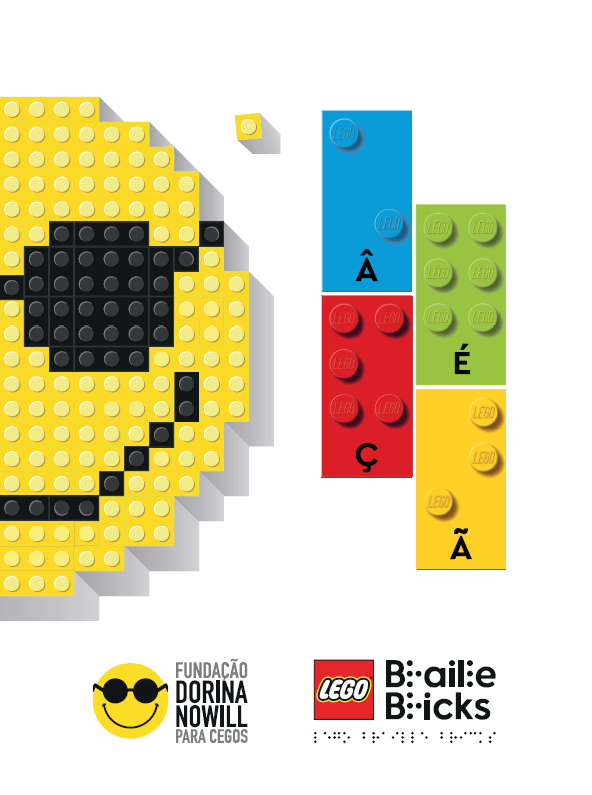
1
Página sem conteúdo.
2
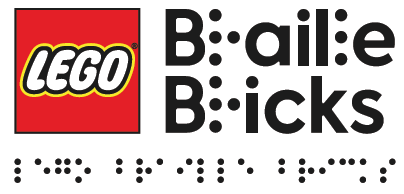
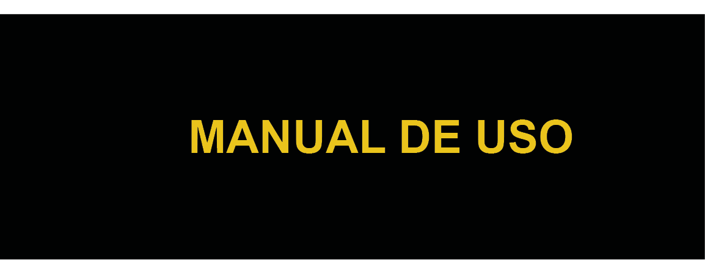
Autores
Cristina Felippe
Elisa Tomoe Moriya Schlünzen
Ika Fleury
Klaus Schlüzen Junior
Marina Regina Lopes
Regina Fatima de Oliveira
Telma de Sousa
Valéria Rodrigues
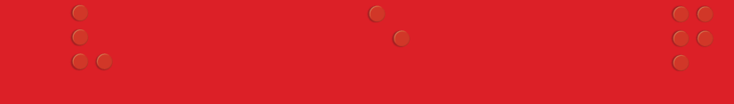
3
Fundação Dorina Nowill para Cegos
A Fundação Dorina é uma organização sem fins lucrativos e de caráter filantrópico que, há mais de sete décadas, dedica-se à inclusão educacional e social de pessoas com deficiência visual. Sua história se funde com a história de Dorina de Gouvêa Nowill, uma paulistana que superou as dificuldades de perder a visão aos 17 anos de idade, em uma época em que a vida de uma pessoa cega se restringia às atividades domésticas, e se tornou uma educadora e ativista conhecida internacionalmente.
4
Apresentação
A Fundação Dorina Nowill para Cegos e a Fundação LEGO têm imenso prazer em apresentar o LEGO® Braille Bricks, um recurso pedagógico para as crianças com e sem deficiência visual, seus familiares e educadores, desejando que todos brinquem e aprendam juntos.
O LEGO® Braille Bricks é uma iniciativa globalmente inovadora. O principal objetivo desse programa é promover o aprendizado do Sistema Braille de forma lúdica, criativa e inclusiva durante o processo de pré-alfabetização e alfabetização de crianças com deficiência visual A PARTIR DE 4 anos.
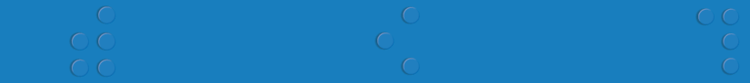
5
O kit LEGO Braille Bricks é composto por um conjunto de peças LEGO®, TRÊS pranchas, UM SEPARADOR e um manual de uso.
Produzidas em material colorido, seguro e durável, as peças LEGO® Braille Bricks estão sinalizadas com letras, números e símbolos básicos de aritmética representados na escrita convencional e no Sistema Braille, o que as torna acessíveis aos estudantes com ou sem deficiência visual.
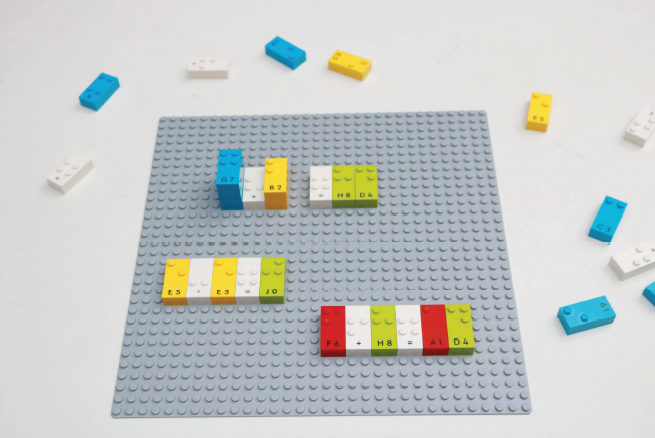
6
Além do tamanho adequado, os símbolos em braille têm representação tátil, relevo perceptível e obedecem ao modelo original da cela braille.
A utilização do material poderá variar de acordo com a criatividade do professor e do estudante, tendo em vista sempre o conhecimento dos símbolos, a formação de palavras e frases, a montagem de objetos e muitas outras atividades pedagógicas.
O uso do LEGO® Braille Bricks não é recomendado para crianças menores de 4 anos.
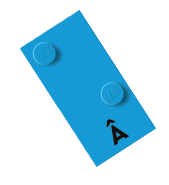
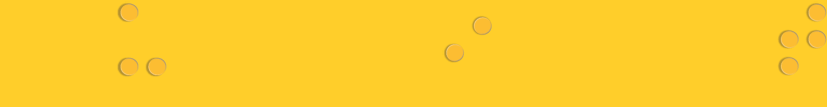
7
Sobre a deficiência visual
A deficiência visual é dividida em duas categorias: a cegueira e a baixa visão.
As crianças cegas aprendem a ler e a escrever pelo Sistema Braille. Algumas têm apenas percepção de luz.
As crianças com baixa visão usam o resíduo visual para sua aprendizagem e utilizam textos com caracteres ampliados e, em alguns casos, recursos ópticos (exemplo: lentes especiais).
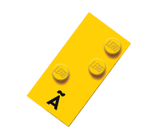
8
Conhecendo o Sistema Braille
Baseado na combinação de seis pontos dispostos em duas colunas e três linhas, o Sistema Braille permite a formação de 63 caracteres diferentes, que representam as letras do alfabeto, os números, a pontuação, a simbologia científica, musicográfica, fonética e informática.
Esse sistema adapta-se perfeitamente à leitura tátil, pois os seis pontos em relevo podem ser percebidos pela parte mais sensível do dedo indicador com apenas um toque.
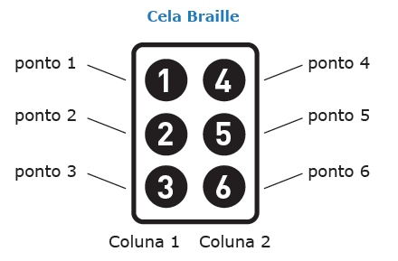
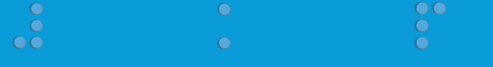
9
A leitura do braille é feita da esquerda para a direita, com uma ou ambas as mãos.
O sistema Braille é a única forma de alfabetizar a criança cega no mundo.
A escrita braille é realizada por meio de uma reglete e punção, máquina de datilografia, teclado de um computador ou smartphone.
![Imagem: Esquema. Alfabeto braille. Destaque para o alfabeto em braile, composto por uma célula com sequência de seis pontos negros, sendo duas colunas verticais com três pontos cada. O primeiro ponto é chamado de 1, o de baixo 2 e o último 3. Ao lado, a fileira com os pontos 4, 5, 6. Letra A - ponto 1. Letra b - ponto 1 e 2. Letra c - ponto 1 e 4. Letra d - ponto 1, 4 e 5. Letra hêeh - ponto 1 e 5. Letra f - ponto 1, 2 e 4. Letra g - ponto 1, 2, 4 e 5. Letra h - ponto 1, 2 e 5. Letra íh - ponto 2 e 4. Letra j - ponto 2, 4 e 5. Letra k - ponto 1 e 3. Letra héli - ponto 1, 2 e 3. Letra m - ponto 1, 3 e 4. Letra n - ponto 1, 3, 4 e 5. Letra ôh - ponto 1, 3 e 5. Letra p - ponto 1, 2, 3 e 4. Letra q - ponto 1, 2, 3, 4 e 5. Letra r - ponto 1, 2, 3 e 5. Letra s - ponto 2, 3 e 4. Letra t – ponto 2, 3, 4 e 5. Letra u - ponto 1, 3 e 6. Letra vê - ponto 1, 2, 3 e 6. Letra w - ponto 2, 4, 5, 6. Letra xís - ponto 1, 3, 4 e 6. Letra y - ponto 1, 3, 4, 5 e 6. Letra z - ponto 1, 3, 5 e 6. Fim da imagem.](../resources/images/image_Image12793.png)
10
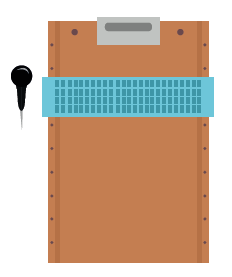
LEGENDA: Reglete e punção. FIM DA LEGENDA.
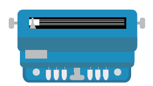
LEGENDA: Máquina datilográfica. FIM DA LEGENDA.
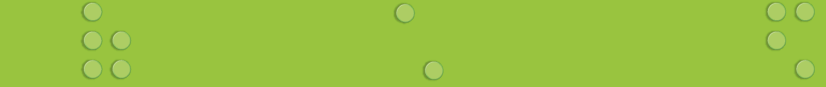
11
Experiências com o LEGO Braille Bricks
Profissionais especialistas na área da deficiência visual da Fundação Dorina Nowill para Cegos e do Instituto Sul Mato-grossense para “Cegos Florisvaldo Vargas” (ISMAC) realizaram experiências práticas com crianças com e sem deficiência visual, utilizando o LEGO® Braille Bricks.
Ambas as instituições levantaram possibilidades na aplicação desse recurso pedagógico no aprendizado do Sistema Braille, contribuindo no processo de pré-alfabetização e alfabetização de forma inclusiva.
Foi possível observar que, além da aprendizagem do Sistema Braille de maneira lúdica, o brinquedo proporcionou benefícios nos aspectos psicomotores, tais como: lateralidade, noção espacial, noção temporal, coordenação motora fina, motricidade, além de favorecer os aspectos cognitivos como atenção, concentração, raciocínio lógico e memória.
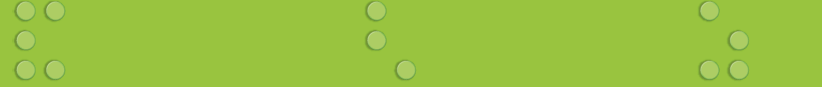
12
As atividades foram realizadas com crianças com e sem deficiência, alfabetizadas e não alfabetizadas, individualmente e em grupo, e com familiares.
O papel do professor
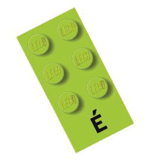
É importante destacar que os professores da sala comum e da sala de recursos multifuncionais devem considerar a etapa do desenvolvimento dos estudantes.
Os educadores poderão, durante o uso do LEGO® Braille Bricks, observar e analisar fatores como o tempo utilizado, quantidade e qualidade dos resultados obtidos, organização do trabalho, estratégias de comunicação entre as crianças durante a brincadeira.
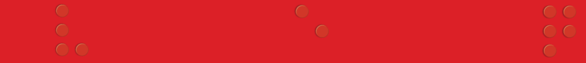
13
Quando uma criança cega é colocada diante de um brinquedo ou objeto, deve segurá-lo e explorá-lo com suas mãos.
Necessita perceber suas características de textura com a superfície interna da palma das mãos e detalhadamente com os dedos de uma ou ambas as mãos.
As experiências táteis devem ser potencializadas para as crianças cegas, pois embora necessitem adquirir conceitos por meio de seu desenvolvimento motor, elas precisam desenvolver suas habilidades motoras finas para utilizar os instrumentos de escrita. O tato será sua principal fonte de informação no processo de aquisição da leitura.
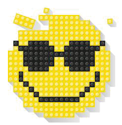
14
Primeiros passos com o LEGO® Braille Bricks
• Reunir um grupo de crianças, incentivando-as a explorar, manusear, brincar, reconhecer sua forma, peso, tamanho dos orifícios e pontos salientes em cada uma das peças.
• Informar e discutir com as crianças sobre a importância de aprender a ler e escrever para nossa vida, esclarecendo que as crianças com deficiência visual também aprendem a ler e escrever, porém por meio do Sistema Braille.
• Identificar e explicar que cada peça é uma cela braille e corresponde a um símbolo da escrita em alfabeto convencional.
• Incentivar as crianças a utilizar as peças para montar objetos simples, tais como: casa, robô, avião, figuras geométricas e outros.
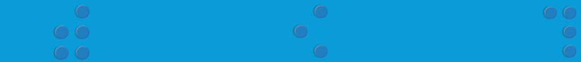
15
• Mostrar detalhadamente cada uma das peças, trabalhando os conceitos de esquerda, direita, em cima, no meio, embaixo, usando também a prancha para fixação do LEGO® Braille Bricks.
• Ensinar algumas letras e iniciar atividades com a letra do nome da criança.
• Propor para as crianças que encontrem no ambiente outros objetos que comecem com a mesma letra que inicia o seu nome.
![Imagem: Fotografia. Peças de légo, dispostas em uma base cinza. Na parte superior, peça azul com os pontos 1 e 4 e a inscrição C3 na parte inferior; peça vermelha com o ponto 1 e a inscrição áh 1 na parte inferior; peça amarela com os pontos 1, 2, 3 e 5 e a inscrição R na parte inferior; peça amarela com os pontos 1, 2, 3 e 5 e a inscrição R na parte inferior; peça branca com os pontos 1, 3 e 5 e a inscrição ôh na parte inferior. Abaixo, há um carro vermelho de brinquedo feito de madeira com rodas circulares e marrons. Fim da imagem.](../resources/images/image_Image12886.png)
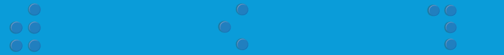
16
• Utilizar pequenos objetos de interesse das crianças, tais como: bola, bala, pote, cubo, que depois de explorados possam formar as palavras correspondentes em braille, fixando-as na prancha.
![Imagem: Fotografia. Peças de légo, dispostas em uma base cinza. Ao centro, peça amarela com os pontos 1, 2 e 3 e a inscrição héli na parte inferior; peça azul com os pontos 1, 2, 3, 5 e 6 e a inscrição A com acento agudo na parte inferior; peça azul com os pontos 1, 2, 3 e 4 e a inscrição P na parte inferior; peça azul com os pontos 2 e 4 e a inscrição hí 9 na parte inferior; peça vermelha com os pontos 2, 3 e 4 e a inscrição S na parte inferior. Acima há um lápis de côr laranja e abaixo, um azul. Fim da imagem.](../resources/images/image_Image12901.png)
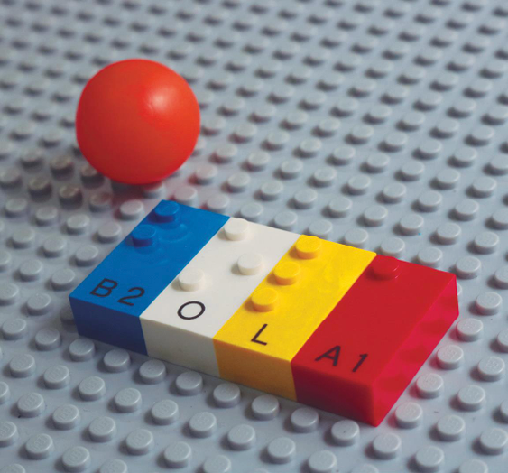
Propor para as crianças que encontrem no ambiente, outros objetos que comecem com a mesma letra que iniciam o seu nome.
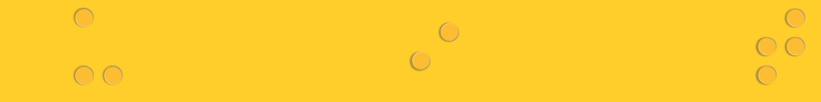
17
• Ajudar as crianças a encaixar as peças na posição correta das letras, começando pelo lado esquerdo da prancha.
• Explicar que, da mesma forma que acontece na escrita comum, devemos deixar um espaço entre uma palavra e outra.
• Ensinar como se representa em braille o sinal de número e os numerais de 1 a 0 (letra A a J), com o símbolo correspondente (pontos 3, 4, 5 e 6), que deve anteceder o número que se deseja representar.
• Motivar as crianças utilizando bolinhas, calendário, relógio, lápis, palito ou outros objetos, para representar a quantidade concreta em numerais correspondentes em braille, sempre de forma lúdica.
18
Sugestões de jogos e brincadeiras com o LEGO Braille Bricks
Para brincar não há receitas. Mas seguem algumas dicas que podem facilitar o início da brincadeira. Não esqueça que o LEGO® Braille Bricks é um recurso pedagógico inclusivo que deve ser compartilhado entre crianças com e sem deficiência.
1. Trabalhando com a lateralidade
Descrição: Utilizar as peças do LEGO® Braille Bricks sobre a prancha para construir figuras que darão orientação de conceitos básicos de lateralidade.
Público-alvo: Crianças a partir de 4 anos.
Objetivo: Trabalhar conceitos de lateralidade, estimulando a atenção, concentração, memória e percepção tátil.
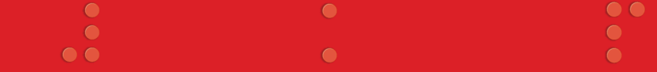
19
Possibilidade de exploração:
O professor apresenta uma figura construída na prancha com as peças do LEGO® Braille Bricks e faz perguntas sobre o que está acima, abaixo, à direita, à esquerda, no meio.
2. Conhecendo a cela braille
Descrição: O educador deverá mostrar para as crianças que a peça do LEGO® Braille Bricks precisa ser encaixada na posição correta, com o símbolo na escrita convencional para baixo.
Apresentar a peça que corresponde aos seis pontos para mostrar como eles são distribuídos na cela.
Público-alvo: Crianças a partir de 4 anos.
Objetivo: Estimular a percepção tátil, memória, atenção e concentração.
Possibilidade de exploração:
O professor poderá fazer uma brincadeira, pedindo aos alunos que procurem inicialmente a peça correspondente ao ponto 1 e assim os demais pontos sucessivamente.
20

3. Descobrindo os pontos
Descrição: O professor deverá trabalhar com as peças do LEGO® Braille Bricks fazendo com que as crianças consigam distinguir, por meio da sensibilidade tátil, os pontos correspondentes nas celas indicadas.
Objetivo: Incentivar e explorar a sensibilidade tátil, concentração, atenção e memória. Orientar a sequência dos pontos apresentados em uma cela braille.
21
Público-alvo: Crianças a partir de 4 anos.
Possibilidade de exploração:
O professor solicitará aos alunos que falem os pontos correspondentes em cada cela.
Exemplo:
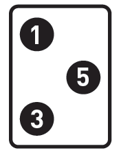
4. Aprendendo a letra do nome
Descrição: O professor mostrará quais são os pontos que indicam a letra inicial do nome de cada estudante e este deverá encontrar na caixa a letra correspondente.
22
Objetivo: Conhecer a letra inicial do nome, estimular a percepção tátil, atenção, concentração, estimulando a pré-alfabetização e alfabetização.
Público-alvo: Crianças a partir de 5 anos.
Possibilidade de exploração:
O professor apresentará os pontos que indicam a primeira letra do nome e a criança deverá buscar a peça correspondente.
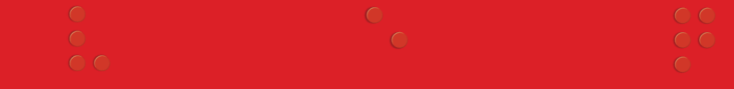
23
5. Trabalhando com o alfabeto
Descrição: Com cada letra do alfabeto, o estudante deverá construir uma figura (exemplo: letra C= figura de uma casa).
Objetivo: Estimular a percepção tátil, criatividade, socialização, coordenação motora fina, atenção e concentração.
Público-alvo: Crianças a partir de 6 anos.
Possibilidade de exploração:
Iniciar a atividade comunicando à criança que cada letra do alfabeto deverá ter uma figura correspondente.
24
6. Escrevendo lista de palavras
Descrição: Formar palavras que iniciem com a letra indicada pelo professor.
Público-alvo: Crianças a partir de 6 anos.
Objetivo: Auxiliar na formação de palavras, ampliação de vocabulário, soletração, leitura e escrita.
Possibilidade de exploração:
O professor dirá uma letra e os estudantes deverão fazer uma lista de palavras. Poderão solicitar aos colegas que leiam as palavras.
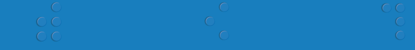
25
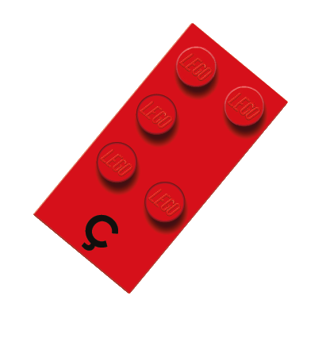
7. Encontre o erro
Descrição: No centro da prancha, o professor escreverá uma palavra com uma letra errada ou posicionada incorretamente. O estudante deverá efetuar a devida correção.
Público-alvo: crianças a partir de 7 anos.
Objetivo: Estimular a percepção tátil, trabalhar a coordenação motora manual, estimular os aspectos cognitivos (atenção, concentração).
Possibilidade de exploração:
Observar se o aluno consegue perceber a letra incorreta e a partir daí procurar na caixa a letra correta.
26
8. Competição
Descrição: O professor dará um comando e os estudantes deverão escrever uma frase em grupo. Vencerá o grupo que terminar a tarefa mais rapidamente.
Público-alvo: crianças a partir de 8 anos.
Objetivo: Estimular o raciocínio, a concentração e a compreensão de regras e potencializar a leitura e escrita.
Possibilidade de exploração:
O professor dividirá a turma em duas equipes e ditará uma frase. Vencerá a equipe que terminar primeiro.
9. Braille Stop
Descrição: As palavras serão formadas e afixadas na prancha, de acordo com o tema sorteado. Ex.: animal com a letra “e”: elefante
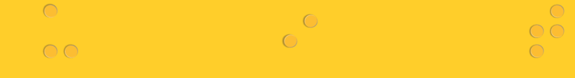
27
Público-alvo: Crianças a partir de 7 anos.
Objetivo: Estimular a percepção tátil, trabalhar a coordenação motora manual, estimular os aspectos cognitivos (atenção, concentração), favorecer a rapidez de raciocínio e melhorar o vocabulário.
Possibilidade de exploração:
Os jogadores combinam o critério para escolha da letra e definem o(s) tema(s). Assim que a letra tiver sido escolhida, os participantes terão que escrever na prancha uma palavra que corresponda à letra e ao tema definido. Quem terminar primeiro de escrever a palavra, grita: ‘Stop’. Pode-se estipular um tempo, por exemplo, dois minutos, para escrever e quem estiver marcando o tempo grita ‘Stop’ e todos param de escrever.
28
10. Competição
Descrição: É um jogo para que a criança complete a frase que a professora escreverá na prancha.
Público-alvo: Crianças a partir de 7 anos.
Objetivo: Trabalhar a atenção, concentração, leitura.
Possibilidade de exploração:
Formar frases na prancha para que as crianças possam completá-las e dar-lhes outros sentidos.
29
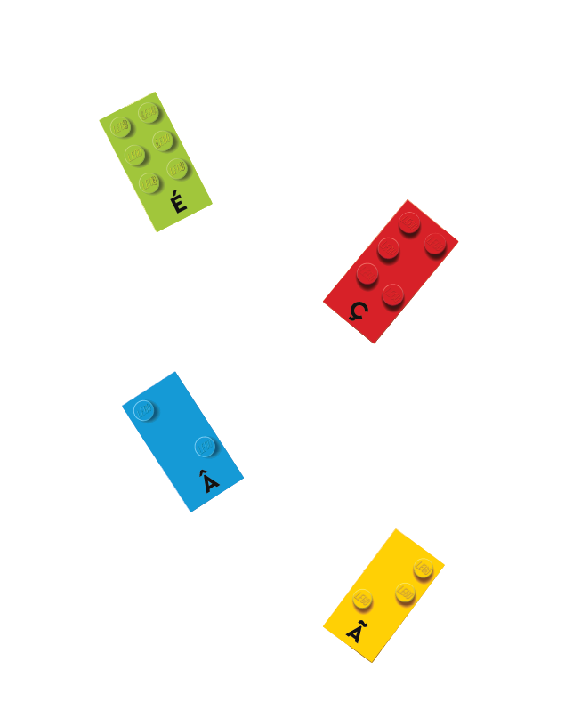
***
HTML
Produzido por Fundação Dorina Nowill para Cegos
Rua Doutor Diogo de Faria, 558 - Vila Clementino
CEP: 04037-001 - São Paulo - SP
Telefone: (11) 5087-0999
*
Linearização: Francielle Maria Chies
Descrição de imagens: Marina Vargas O. Angelelli
Diagramação: Bruno Alves Suniga
Revisão: Marina Vargas O. Angelelli
Supervisão: Marina Vargas O. Angelelli